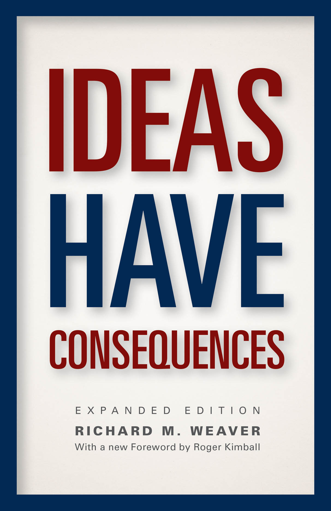
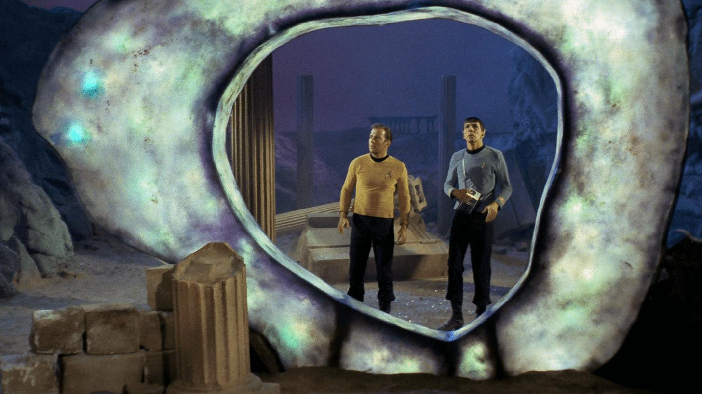
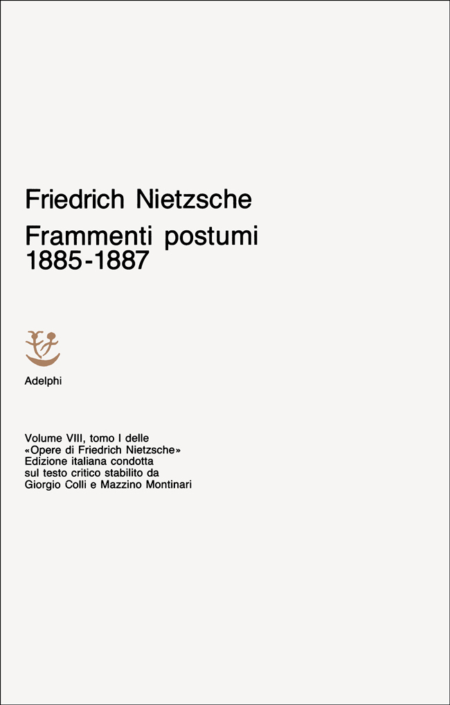

56:56 · 19 OPERE
Interrogarsi sul significato dell'attualità.
Il filo del discorso
La domanda che tiene insieme il contributo è come si possa giudicare l’attualità senza prima comprendere le parole e i criteri con cui la si racconta. Dr Divago parte da notizie del 2023 sulla diplomazia statunitense e dalla rivolta della Wagner. La sua critica riguarda sia i media generalisti sia i commentatori che si presentano come alternativi: anche una citazione colta, secondo il relatore, può diventare una risposta pronta che evita l’indagine.
Leggi la sintesi completaRiduci la sintesi
Le accuse personali e la ricostruzione politica delle responsabilità nella guerra restano sue valutazioni, mentre le note distinguono i dati cronologici verificati. Il primo sviluppo riguarda il sapere ricevuto. La domanda immaginaria rivolta a un miliardario è se sappia dire qualcosa di vero; Nietzsche e Socrate introducono il problema del rapporto fra certezza, conoscenza e riconoscimento dei propri limiti. Il paragone fra chi sostiene una Terra piatta e chi ripete una conclusione scientifica senza saperla motivare è usato per criticare l’adesione passiva. Non dimostra che le due tesi possiedano lo stesso sostegno empirico. Il relatore collega poi il conformismo alla perdita dell’individuo e al successo sociale, presentato attraverso la metafora di una pagnotta distribuita fra persone che accettano il gioco. La lettura di Machiavelli dopo la marcia della Wagner offre il caso metodologico centrale. Dr Divago non nega che il Principe critichi le milizie mercenarie; contesta la applicazione immediata di quel giudizio alla cronaca, senza ricostruire contesto e differenze. Il richiamo a Blackwater allarga il confronto, mentre Ideas Have Consequences di Richard M.Weaver introduce una immagine del servizio alla comunità distinto dalla semplice retribuzione. La digressione chiede lettura personale e disponibilità a imparare. Nelle note, la nozione polemica di esercito mercenario viene distinta dalla definizione giuridica del termine e da un esercito professionale. Il passaggio alla giustizia riporta a Platone. Un esperimento ideale ambientato nella fantascienza propone di valutare una società attraverso la condizione dei più deboli. La Repubblica e le Leggi consentono poi di discutere il legame fra organizzazione della città, giustizia e virtù. Dr Divago interpreta la capacità di dire di no come prova di autonomia morale. Il giudizio contro chi considera Platone un nemico della società aperta appartiene a questo confronto filosofico: non è una confutazione completa di Popper né una classificazione oggettiva di civiltà intere. La parte conclusiva legge e commenta una conferenza di Herbert Marcuse nella raccolta Dialettica della liberazione. Il rapporto fra filosofia e politica, la possibilità di un cambiamento qualitativo e il significato del tempo sono accostati alla domanda su quale vita si voglia rendere possibile. La immagine degli spari contro gli orologi passa da Benjamin a Marcuse e al commento del relatore, con una differenza storica segnalata nelle note. Un aneddoto attribuito a Lyndon Johnson introduce infine il potere di costringere l’avversario a rispondere entro una cornice già imposta. Metafisiche del mondo, il richiamo a Nietzsche e il caso del medico Heinrich Habig chiudono il discorso: senza interrogare verità, bene e giustizia, secondo Dr Divago, si continua soltanto a scegliere fra risposte preparate da altri.
I libri nel discorso

Crepuscolo degli idoli, ovvero Come si filosofa col martello
Identificazione probabile
Note sul riferimento
Copertina: Adelphi, Piccola Biblioteca Adelphi 154, 1983, traduzione di Ferruccio Masini, 184 pagine. Copertina dell’edizione di riferimento, non certificata come esemplare mostrato.
Immagine autentica dell’opera, controllata visivamente; l’edizione di riferimento non è attribuita al filmato.
Nietzsche e il mondo diventato favola: probabile sezione del Crepuscolo degli idoli, titolo del volume non pronunciato.

Proverbi
Identificazione probabile
Note sul riferimento
Copertina della Bibbia che contiene Proverbi: San Paolo, 2014 · Nuova Versione dai Testi Antichi · edizione di riferimento
Copertina dell’intera Bibbia. Non rappresenta un’edizione autonoma dei Proverbi e non identifica l’edizione citata nel video.
La sapienza che chiama per le strade rinvia a Proverbi1:20–21, non al Qoèlet nominato nel parlato.

Apologia di Socrate
Identificazione probabile
Note sul riferimento
Copertina del volume Apologia di Socrate. Critone: BUR · Apologia di Socrate. Critone · a cura di Maria Michela Sassi, 1993
Copertina autentica del volume BUR contenente Apologia di Socrate e Critone. Il secondo titolo non è aggiunto come citazione del video; l’autore del testo è Platone, con Socrate come figura protagonista.
Socrate e il riconoscimento del non sapere richiamano probabilmente Apologia21d–23b.

Fedro
Identificazione probabile
Note sul riferimento
Copertina: BUR · 2006 · a cura di Roberto Velardi
Immagine autentica dell’opera, controllata visivamente; l’edizione di riferimento non è attribuita al filmato.
Diffusione del discorso e ripetizione senza sapere: probabile critica della scrittura nel Fedro274c–275e; titolo non pronunciato.

La ribellione delle masse (La rebelión de las masas)
Identificazione probabile
Note sul riferimento
Copertina: Immagine dell’edizione spagnola Lucemar, catalogo Plutón, 19 febbraio 2026, 288 pagine, brossura. Opera pubblicata in volume nel 1930, dopo articoli del 1929.
Copertina autentica Lucemar, titolo nero e autore rosso su celle esagonali chiare, una cella rossa e un’ape. Edizione di riferimento 2026, non attribuita al filmato. I tentativi sul catalogo universitario e sull’immagine Planeta non hanno avuto esito; non si riporta il dato palesemente incongruo di tre pagine presente nella scheda Espasa.
Ortega e il concetto hombre-masa espliciti; il libro è identificato per il tema ma il titolo non è detto.
Vangelo secondo Matteo
Identificazione probabile
Note sul riferimento
Copertina del volume completo: San Paolo, 2014 · Nuova Versione dai Testi Antichi · edizione di riferimento
Vangelo secondo Matteo è un libro della Bibbia. L’immagine mostra il volume completo San Paolo di riferimento, non un’edizione autonoma del singolo libro e non una versione identificata nella citazione.
Guadagnare il mondo e perdere la propria anima: riconoscibile Matteo16:26, con paralleli Marco8:36 e Luca9:25; Vangelo specifico non dichiarato.

Il Principe
Identificazione probabile
Note sul riferimento
Copertina: Feltrinelli · 2013 · a cura di Ugo Dotti
Immagine autentica dell’opera, controllata visivamente; l’edizione di riferimento non è attribuita al filmato.
Tesi sui mercenari esplicita: riconoscibile Il Principe XII–XIII, senza titolo pronunciato.

Ideas Have Consequences (Le idee hanno conseguenze)
Note sul riferimento
Copertina: Copertina ufficiale University of Chicago Press, Expanded Edition 2013, ISBN 9780226090061: titolo blu e rosso, Richard M.Weaver e prefazione Roger Kimball leggibili. Non è la copertina originale 1948 o una edizione italiana identificata nel filmato.
Immagine autentica dell’opera, controllata visivamente; l’edizione di riferimento non è attribuita al filmato.
Weaver e Ideas Have Consequences espliciti, poi aneddoto del cantiere navale.

Star Trek: The Original Series
Note sul riferimento
Immagine ufficiale della serie · Kirk e Spock: Immagine promozionale ufficiale di Star Trek.com: Kirk e Spock davanti al Guardian of Forever. È un fotogramma usato dalla pagina della serie, non una copertina libraria, una locandina d’epoca o l’episodio a cui attribuire l’esperimento inventato dal relatore.
Immagine autentica dell’opera, controllata visivamente; l’edizione di riferimento non è attribuita al filmato.
Kirk, Enterprise e Star Trek espliciti. L’esperimento sul pianeta è del relatore, non una scena identificata.

Stargate SG-1
Identificazione probabile
Note sul riferimento
Fotografia della serie · sito Richard Dean Anderson: Fotografia promozionale pubblicata sul sito di Richard Dean Anderson: O’Neill, Jackson, Carter e Teal’c davanti al portale. Non è una copertina di romanzo, una confezione video o una prova dell’episodio ricordato.
Immagine autentica dell’opera, controllata visivamente; l’edizione di riferimento non è attribuita al filmato.
Stargate come serie con portale fra pianeti esplicita; SG-1 identificazione probabile, sottotitolo ed episodio non pronunciati.

La società aperta e i suoi nemici
Identificazione probabile
Note sul riferimento
Copertina: Armando Editore · Classici · 2018 · volume unico
Copertina autentica di riferimento, controllata visivamente. L’edizione non è identificata come quella usata nel video.
La definizione di Platone nemico della società aperta richiama probabilmente Popper; nome e titolo completo non detti.

La Repubblica
Note sul riferimento
Copertina: Laterza · La Repubblica · edizione con testo a fronte di riferimento
Immagine associata all’ISBN di riferimento e controllata visivamente; edizione e traduzione non identificate come quelle citate o lette nel video.
Politeia/Repubblica esplicita, con successiva citazione del libro X617e.

Leggi (The Laws)
Note sul riferimento
Copertina: Penguin Classics,28 giugno 2005,560 pagine; traduzione, introduzione e note di Trevor J. Saunders, prefazione di Richard Stalley. Copertina della traduzione inglese; nessuna edizione attribuita al relatore.
Immagine autentica dell’opera, controllata visivamente; l’edizione di riferimento non è attribuita al filmato.
Leggi esplicite e lettura del dialogo con Clinia, riconoscibile XII963a.

Dialettica della liberazione. Integrazione e rifiuto nella società opulenta
Note sul riferimento
Copertina: Fotografia autentica della seconda edizione Einaudi 1970: in alto si leggono Nuovo Politecnico31, Einaudi 1969,2ªed.1970. Fondo chiaro e quadrato arancione. Il filmato ricorda il 1969, ma non si certifica che questa sia la medesima impressione mostrata.
Immagine autentica dell’opera, controllata visivamente; l’edizione di riferimento non è attribuita al filmato.
Titolo, atti londinesi luglio 1967 e volume Einaudi 1969 espliciti.
La liberazione dalla società opulenta (Liberation from the Affluent Society)
Note sul riferimento
Raccolta contenente la conferenza · Einaudi 1970: La stessa fotografia di Dialettica della liberazione, Einaudi seconda edizione 1970, illustra la raccolta contenente il contributo. Non è una copertina autonoma del saggio o del diverso Saggio sulla liberazione.
Immagine autentica dell’opera, controllata visivamente; l’edizione di riferimento non è attribuita al filmato.
Titolo della conferenza esplicito, preceduto dalla lettura della apertura.

Tuscolane (Tusculanae disputationes)
Identificazione probabile
Note sul riferimento
Copertina: BUR,8 maggio 1996,560 p, ISBN 9788817171007; introduzione di Emanuele Narducci, traduzione di Lucia Zuccoli Clerici. Copertina editoriale autentica; testo antico riscontrato sul latino, non attribuzione al filmato di questa edizione.
Immagine autentica dell’opera, controllata visivamente; l’edizione di riferimento non è attribuita al filmato.
Cicerone e Socrate che porta la filosofia dal cielo alla terra: probabile Tuscolane V10, titolo non pronunciato.

Sul concetto di storia (Über den Begriff der Geschichte)
Identificazione probabile
Note sul riferimento
Copertina: Copertina ufficiale Suhrkamp del volume19 dell’edizione critica, a cura di Gérard Raulet, prima uscita 2010, ristampa 2021, ISBN 9783518585498. Nome Benjamin e titolo tedesco leggibili su fondo grigio. Il testo è del 1940; non si attribuisce questa edizione al filmato.
Immagine autentica dell’opera, controllata visivamente; l’edizione di riferimento non è attribuita al filmato.
Aneddoto attribuito a Benjamin tramite Marcuse: probabile tesi XV di Sul concetto di storia; titolo non pronunciato.

Metafisiche del mondo
Note sul riferimento
Copertina: Copertina riprodotta nella recensione di Domenico Conversa
Dr Divago nomina il proprio libro e riprende l’immagine del guardare altrove rispetto alla domanda imposta.

Frammento postumo 7[60], fine 1886–primavera 1887
Identificazione probabile
Note sul riferimento
Copertina della raccolta contenente il frammento: Copertina della raccolta Frammenti postumi 1885–1887, Adelphi, Opere volume VIII, tomo I, edizione italiana sul testo critico Colli e Montinari; traduzione Sossio Giametta, prima edizione 1975.
Copertina autentica Adelphi bianca: autore, intervallo cronologico, volume e curatori leggibili. Non è un’edizione autonoma del frammento né una copia identificata nel filmato. Il sito attuale e il catalogo storico riportano paginazioni diverse: non vengono mescolate per attribuire una precisa ristampa alla fotografia.
Formula sui fatti e sulle interpretazioni riconoscibile nel frammento7[60], numero e titolo della raccolta non detti.